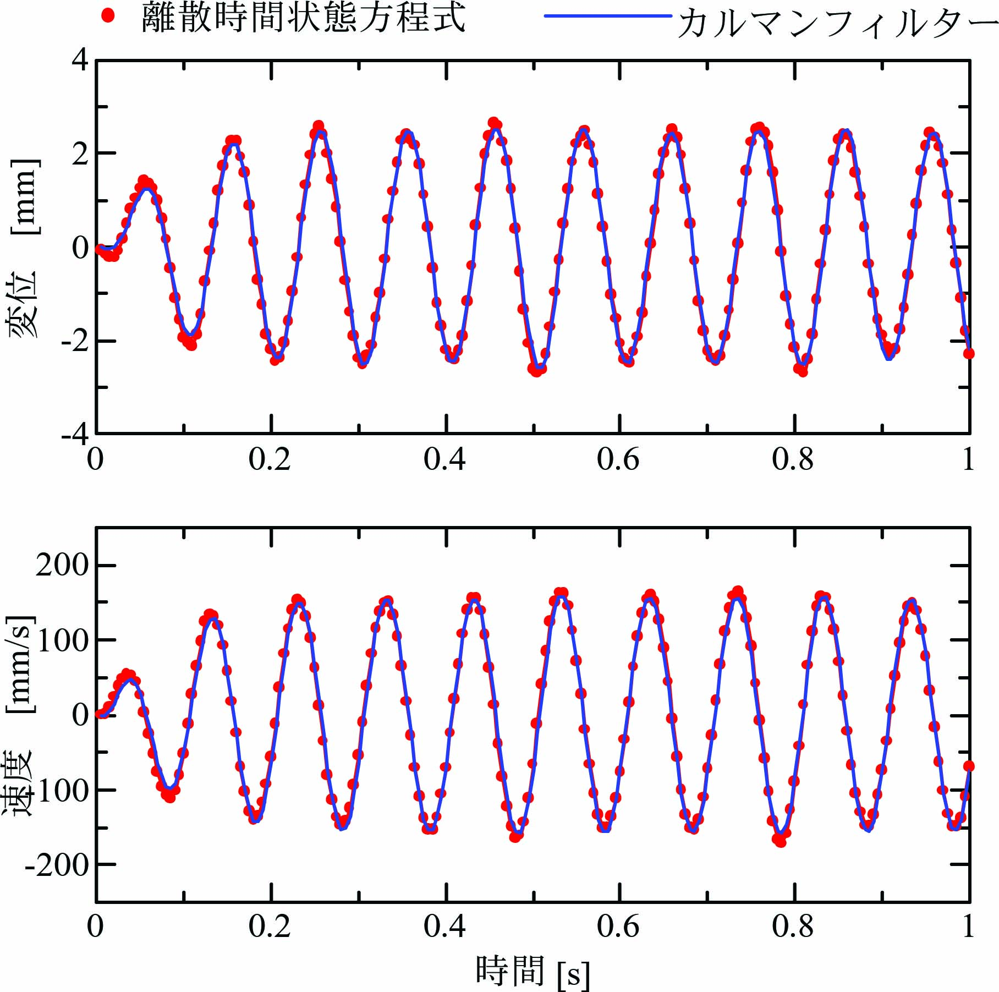
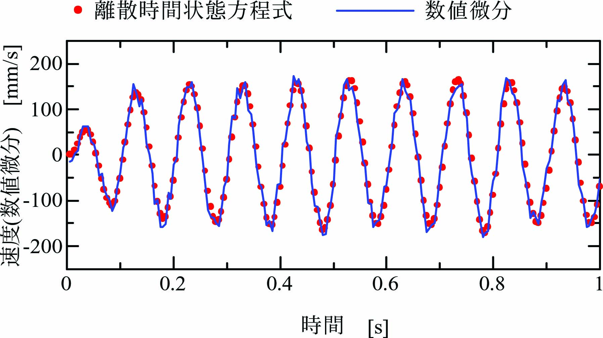

１自由度粘弾性振動系の離散時間状態方程式は次式となります。
\begin{align} \left. \begin{array}{@{\,}rl} \mathbf{x}(n+1)&=~\mathbf{P}\mathbf{x}(n)+\mathbf{Q}u(n)+\mathbf{w}(n)\\ y(n)&=~\mathbf{C}\mathbf{x}(n)+v(n) \end{array}\label{eq:RtnEqn} \right\} \end{align}ここに、\(\mathbf{u}\)は入力、\(\mathbf{x}\)は状態量、\(y\)は出力(変位)、 \(\mathbf{P}\)は遷移行列、\(\mathbf{Q}\)は入力係数行列、\(\mathbf{C}\)は出力係数行列、 \(v\)は出力ノイズ、\(\mathbf{w}\)は入力ノイズです。 出力ノイズ\(v\)と\(\mathbf{w}\)は乱数により発生させます。
\(\omega_n=6.28\times 10\)[rad/s]、\(\zeta=0.2\)、サンプリング周期\(T=0.005\)[s]として 係数行列\(\mathbf P\)、\(\mathbf Q\)は次式となります。
\begin{align} \mathbf{P}= \left[ \begin{array}{@{\,}cc} 0.9531&0.004222\\ -18.23&0.8370 \end{array} \right],~~~ \mathbf{Q}= \left[ \begin{array}{@{\,}c} -0.04691\\ 18.23 \end{array} \right],~~~ \mathbf{C}=[1~~0]. \label{eq:MatPQ} \end{align}離散時間状態方程式\eqref{eq:RtnEqn}、\eqref{eq:MatPQ}の 定常カルマンフィルタは次式となります。
\begin{align} \left. \begin{array}{@{\,}rl} {\mathbf{q}}(n+1)&=~\mathbf{P}\hat{\mathbf{x}}(n)+\mathbf{Q}\mathbf{u}(n)\\ e(n)&=~y(n)-\mathbf{C}\mathbf{q}(n)\\ \hat{\mathbf{x}}(n)&=~{\mathbf{q}}(n)+\mathbf{K}\mathbf{e}(n) \end{array}\label{eq:KalmanFilt} \right\} \end{align}出力ノイズと入力ノイズの共分散行列は次式となります。
\begin{align} \mathbf{V}=5.271\times 10^{-5},~~~ \mathbf{W}= \left[ \begin{array}{@{\,}cc} 1.201\times 10^{-5}&0\\ 0&1.8314 \end{array} \right]. \label{eq:MatVW} \end{align}式\eqref{eq:MatPQ}と\eqref{eq:MatVW}で与えた係数行列\(\mathbf{P}\)と 共分散行列\(\mathbf{V}\)、\(\mathbf{W}\)を用いて Riccati方程式を計算します。
\begin{align} {\mathbf Z}(n+1)={\mathbf P}{\mathbf Z}(n){\mathbf P}^T-{\mathbf P}{\mathbf Z}(n){\mathbf C}^T({\mathbf C}{\mathbf Z}(n){\mathbf C}^T+{\mathbf V})^{-1}{\mathbf C}{\mathbf Z}(n){\mathbf P}^T+{\mathbf W}.\label{eq:MatP_A} \end{align}十分大きな\(n\)に対してRiccati方程式の解\({\mathbf Z}(n)\)は定数行列\(\mathbf Z\)(\(={\mathbf Z}(n+1)={\mathbf Z}(n)\))に収束します。
\begin{align} \mathbf{Z}= \left[ \begin{array}{@{\,}cc} 4.34\times 10^{-4}&6.29\times 10^{-3}\\ 6.29\times 10^{-3}&5.990\times 10^{-1} \end{array} \right]. \label{eq:Mat_Z} \end{align}カルマンフィルター\eqref{eq:KalmanFilt}に用いるカルマンゲイン\({\mathbf K}\)はRiccati方程式の解\({\mathbf Z}\)を用いて次式で与えられます。
\begin{align} \mathbf{K}={\mathbf Z}{\mathbf C}^T\{{\mathbf C}{\mathbf Z}{\mathbf C}^T+{\mathbf V}\}^{-1}. \label{eq:KalmanGain} \end{align}式\eqref{eq:MatPQ}、\eqref{eq:MatVW}、\eqref{eq:Mat_Z}の行列\(\mathbf{C}\)、\(\mathbf{V}\)、\(\mathbf{Z}\)を 式\eqref{eq:KalmanGain}に代入してカルマンゲイン\(\mathbf{K}\)を計算します。
\begin{align} \mathbf{K}= \left[ \begin{array}{@{\,}c} 7.597\times 10^{-2}\\ 1.092 \end{array} \right]. \label{eq:Mat_K} \end{align}初期値\(x(0)=0\)、\(\dot x(0)=0\)とし、入力\(\)を次式の正弦振動で与えます。
\begin{align} u(n) = \sin(2\pi nfT)\label{eq:SineInp} \end{align}入力正弦波\eqref{eq:SineInp}の振動数\(f=10\)[Hz]です。
下図にカルマンフィルターの効果を示します。 離散時間状態方程式により計算した状態量(変位\(x(n)\)と速度\(\dot x(n)\))を赤い点、 カルマンフィルターにより計算した状態量(変位\(x(n)\)と速度\(\dot x(n)\))を青線で示しています。
この計算結果により、カルマンフィルターが離散時間状態方程式の状態量(変位\(x(n)\)と速度\(\dot x(n)\))を再現できていることを確認できます。
下図に数値微分で速度\(\dot x(n)\)を計算した結果を示します。 離散時間状態方程式により計算した速度\(\dot x(n)\)を赤い点、 離散時間状態方程式の変位\(x(n)\)を数値微分\(\dot x(n) = (x(n)-x(n-1)/\varDelta t)\)により計算した速度を青線で示しています。
数値微分によりノイズが拡大されるために速度\(\dot x(n)\)の形状が乱れていることを確認できます。 これらの数値計算の結果からカルマンフィルターによる状態量推定の効果を確認できます。